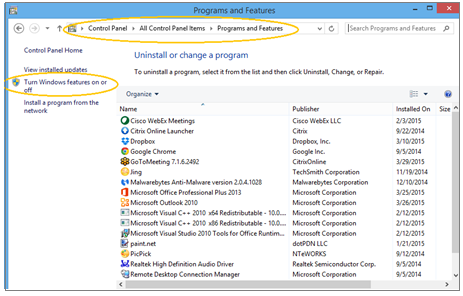
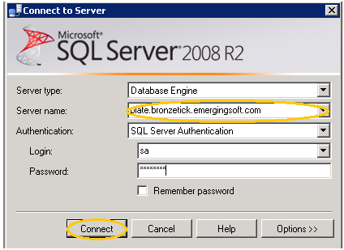

Server 2008 R2 Prerequisite Setup
Application Server Prerequisite Setup
Web Server (Roles)
- Go to Start > Control Panel > Programs>Programs and Features.
- Select Turn Windows Features on or off.

- Expand Roles from the ‘Server Manager’ window.
- Select Web Server (IIS).
- Verify the roles listed below are installed. Add the Role Services, if the services are NOT installed, by selecting Add Features from the top right corner of the ‘Manager Window.’
(Web Server>Security)
(Web Server>Application Development)
- IIS 6 Metabase Compatibility (Management Tools>IIS 6 Management Compatibility)
Message Queuing Services
(Features>Message Queuing> Message Queuing Services> Message Queuing Server/Directory Service Integration/ HTTP Support)
- Select Features from the ‘Server Manger” window, and verify the services listed below are installed.
(Message Queuing>Message Queuing Services)
- Directory Service Integration
(Message Queuing>Message Queuing Services)
(Message Queuing>Message Queuing Services)
- Add the Queuing Services by selecting Add Features from the top right corner of the ‘Manager Window.’
- From Confirmation, enable Restart the destination server automatically required.
- From Confirmation, select Install.
- From Results, view Feature Installation, and Close.
Internet Information Services (IIS)
(Roles>Web Server (IIS)>select Internet Information Services (IIS) Manager
- Expand Roles on the ‘Server Manager’ window’.
- Expand Web Server (IIS).
- Select Internet Information Services (IIS) Manager.
- Expand the server that MeetingPlanner will be installed on.
- Expand Sites.
- Select Default Web Sites.
- Verify the URL Rewrite Module is installed in the ‘IIS Manager’ window.
NOTE: For information on installing the module, see link: http://www.iis.net/downloads/microsoft/url-rewrite.
- Verify the Default Web Site bindings. The ‘Default Web Site’ bindings automatically default as shown below. After installation, the values can be changed.
- TCP Port: 80
- IP Address: (All Unassigned)
- Host Header Value: <none>
Microsoft .NET Framework
- Select Start > Run.
- Enter ‘regedit’ and Ok.
- Navigate to the NDP node in the ‘Registry Editor’: (HKEY_LOCAL_MACHINE >Software >Wow6432Node>Microsoft >NET Framework Setup> NDP).
- Select 2.0.5.727.
- Verify .NET 2.0 is installed.
IMPORTANT: If the “Install” key does not equal “1,” please install .NET 2.0.
- Verify .NET 4.0 is installed.
(HKEY_LOCAL_MACHINE >Software >Wow6432Node>Microsoft >NET Framework Setup> NDP>v4.0)
- Select Client.
IMPORTANT: If the “Install” key does not equal “1,” please install .NET 4.0.
Supporting Microsoft References:
- http://msdn.microsoft.com/en-us/kb/kbarticle.aspx?id=318785
- http://msdn.microsoft.com/en-us/library/hh925568.aspx
Database Server Prerequisite Setup
SQL Server
- Enable Mixed Authentication Mode.
- Open ‘Microsoft SQL Server Management Studio’ and Connect.

- Right click on the server name in the ‘Object Explorer’ window.
- Select Properties >Security.
- Select SQL Server and Windows Authentication Mode and OK.